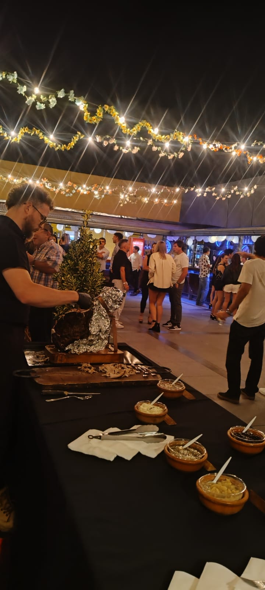
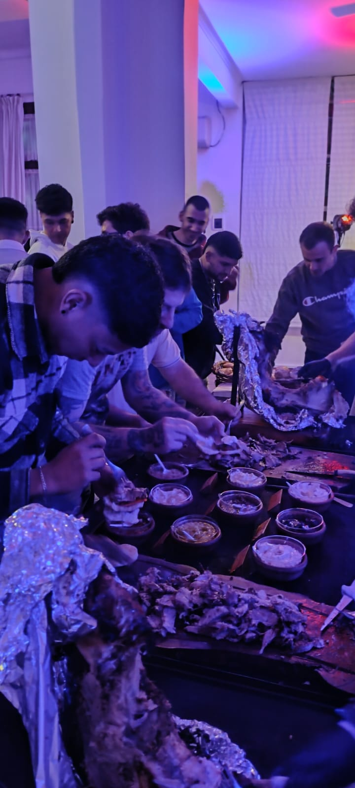
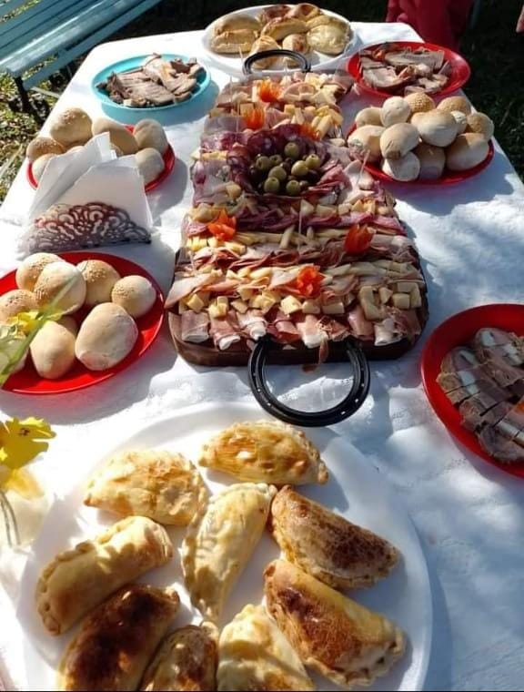
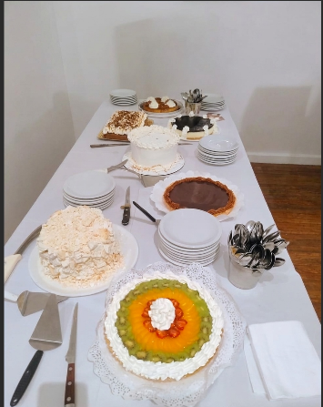

Sabores de campo,
momentos para compartir
En La Gran Pata Gaucha llevamos nuestra propuesta gastronómica a cada evento, combinando sabores caseros, productos elaborados artesanalmente y una presentación pensada para disfrutar y compartir.
Nuestros productos
NUESTROS SERVICIOS
Experiencias pensadas para cada evento

CATERING
Catering para eventos sociales, empresariales y corporativos
Propuestas gastronómicas pensadas para acompañar cada celebración, reunión o encuentro, adaptándonos al estilo y necesidades de cada evento.
Consultar
NUESTRA ESPECIALIDAD
Patas y perniles al horno de leña
Sabores de campo elaborados al horno de leña, acompañados de nuestras salsas caseras y pensados para compartir en cada evento.
Consultar
TABLAS Y SABORES PARA COMPARTIR
Picadas y lunch
Tablas de fiambres y quesos acompañadas por variedad de pancitos, empanadas de campo, empanadas de copetín, pizzettas, canapés, sándwiches de miga y otras opciones para compartir.
Consultar
MOMENTOS PARA DISFRUTAR
Mesa dulce
Tortas, tartas y propuestas dulces elaboradas para acompañar cada celebración, con variedad de sabores y presentaciones pensadas para compartir y disfrutar.
ConsultarContacto
Consultanos por tu próximo evento.